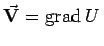
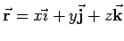
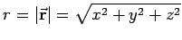
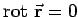
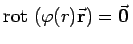
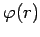

Inhalt Index DeskTop Bronstein

 Vektoranalysis und Feldtheorie Räumliche Differentialoperationen Rotation des Vektorfeldes
Vektoranalysis und Feldtheorie Räumliche Differentialoperationen Rotation des Vektorfeldes


Aus dem Integralsatz von STOKES folgt, daß die Rotation eines Potentialfeldes gleich Null ist:
Das folgt auch aus (13.57a) für , wenn die Voraussetzungen des
SCHWARZschen Vertauschungssatzes erfüllt sind.
| Beispiel |
|
Für  mit  gilt:  und , wobei  eine differenzierbare Funktion von r ist. |